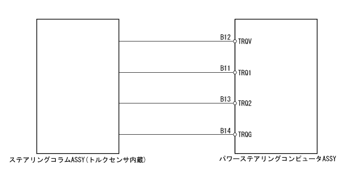
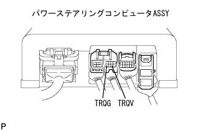
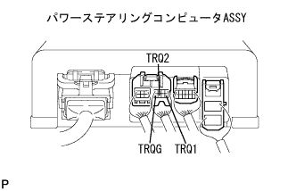

DTC C1511/11 Torque Sensor Malfunction1 |
DTC C1512/11 Torque Sensor Malfunction2 |
DTC C1513/11 Torque Sensor Deviation Excessive |
DTC C1514/11 Torque Sensor Power Supply Voltage Malfunction |
DTC C1517/11 Torque Hold Malfunction Continues |
| DTC NO | Detection Item | Inspection Area |
|---|---|---|
| C1511/11 | Torque sensor (TRQ1) signal malfunction or interruption |
|
| C1512/11 | Torque sensor (TRQ2) signal malfunction or interruption | |
| C1513/11 | When the deviation between torque sensor TRQ1 and TRQ2 is out of the specified range | |
| C1514/11 | Torque sensor power supply voltage malfunction | |
| C1517/11 | Temporary control due to torque sensor system malfunction continues for a long time |

)| Step 1 | ECU Data Monitor Inspection (Torque Sensor 1 Output, Torque Sensor 2 Output) |
Start the engine.
Using SST (TaSCAN), check "Torque Sensor Output 1" and "Torque Sensor Output 2" in the data monitor under each measurement condition.
| Measurement Condition | Torque Sensor Output 1 | Torque Sensor Output 2 |
|---|---|---|
| Steering in neutral position (no load) | 2.3 to 2.7V | 2.3 to 2.7V |
| Steering turned right | 2.5 to 3.8V | 1.2 to 2.5V |
| Steering turned left | 1.2 to 2.5V | 2.5 to 3.8V |
|
| ||||
| OK | ||
| ||
| Step 2 | Inspect Power Steering Computer Assembly (TRQV, TRQG Terminals) |
 |
Start the engine.
Using SST (Toyota electrical tester), inspect the voltage between each pair of terminals of the power steering computer assembly.
| Tester Connection | Condition | Standard |
|---|---|---|
| B12(TRQV)←→B14(TRQG) | Start the engine | 4.5 to 5.5V |
|
| ||||
| OK | |
| Step 3 | Inspect Steering Column Assembly (TRQ1, TRQ2-TRQG) |
 |
Start the engine.
Using SST (Toyota electrical tester), inspect the voltage between each pair of terminals of the power steering computer assembly under each measurement condition.
| Tester Connection | Condition | Standard |
|---|---|---|
| B11(TRQ1) - B14(TRQG) | Engine running, steering in neutral position (no load) | 2.3 to 2.7V |
| Engine running, steering turned right | 2.5 to 3.8V | |
| Engine running, steering turned left | 1.2 to 2.5V | |
| B13(TRQ2) - B14(TRQG) | Engine running, steering in neutral position (no load) | 2.3 to 2.7V |
| Engine running, steering turned right | 1.2 to 2.5V | |
| Engine running, steering turned left | 2.5 to 3.8V |
|
| ||||
| OK | ||
| ||